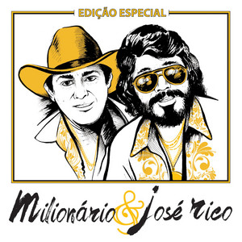
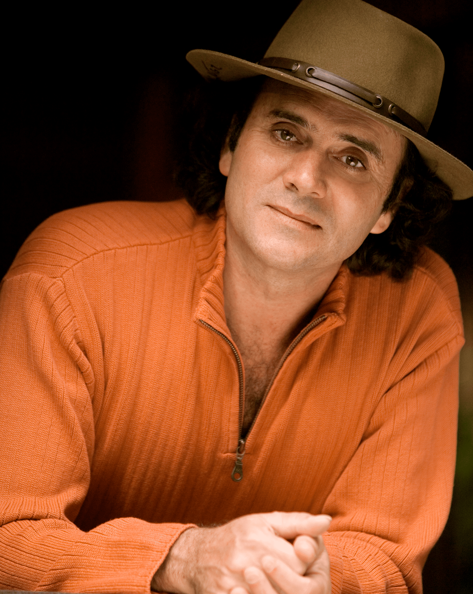
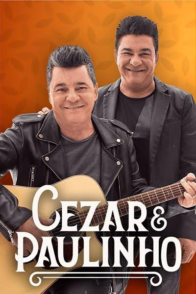
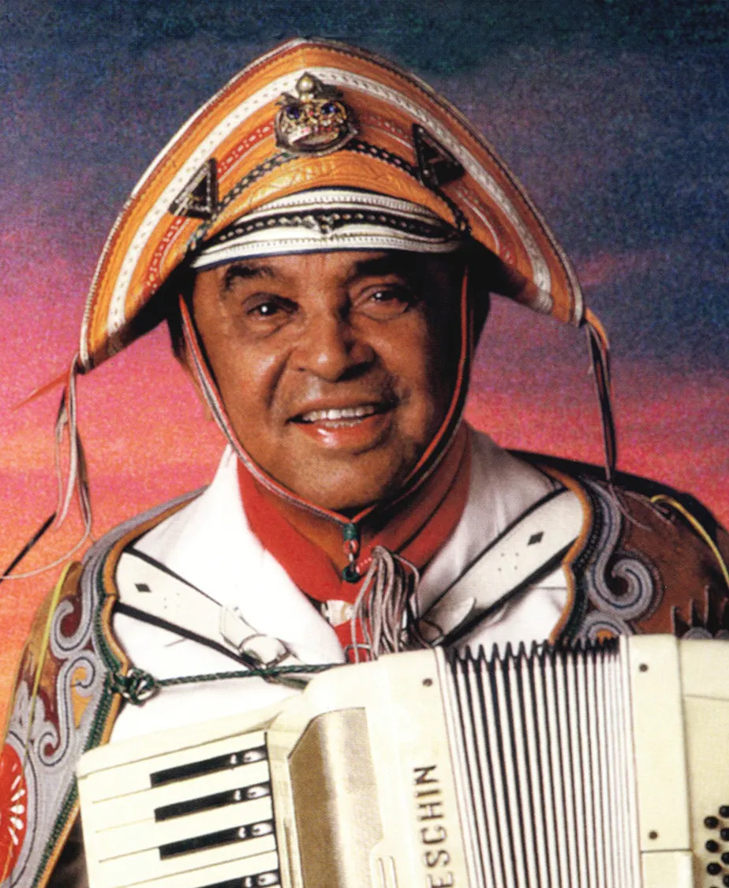
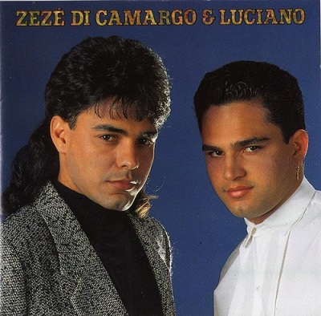
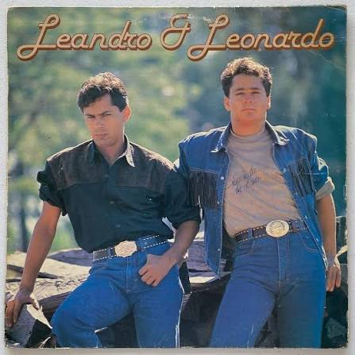
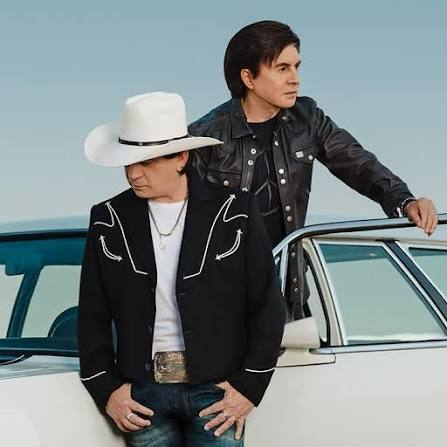
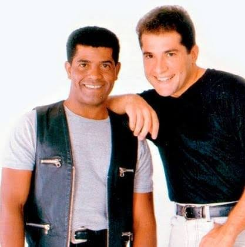

1

🌾 Estrada da Vida
Milionário & José Rico
Uma das músicas mais emocionantes e conhecidas do
sertanejo brasileiro, marcando gerações.
2
🚛 Caminhoneiro
Sérgio Reis
Um dos maiores sucessos ligados à vida dos
caminhoneiros brasileiros e à paixão pelas estradas.
3

🌊 Chalana
Almir Sater
Um dos maiores clássicos da música sertaneja brasileira,
lembrado pela nostalgia das viagens pelos rios e pela
vida simples do interior.
4
🏞️ Menino da Porteira
Sérgio Reis
Um clássico eterno do sertanejo raiz, contando
uma emocionante história do interior brasileiro
e da vida simples no campo.
5

⭐ O Homem da Estrada
Roberto Carlos
Uma emocionante homenagem aos caminhoneiros
brasileiros, retratando a coragem, a saudade
e a importância de quem vive nas estradas do país.
6

🌙 Viajante Solitário
Cezar & Paulinho
Uma canção emocionante que fala sobre a solidão,
a saudade e as longas jornadas de quem passa a vida
viajando pelas estradas do Brasil.
7

🛣️ Vida de Viajante
Luiz Gonzaga
Um dos maiores clássicos da música brasileira,
celebrando a liberdade, as viagens e a vida de
quem está sempre seguindo novos caminhos pelo país.
8

❤️ É o Amor
Zezé Di Camargo & Luciano
Lançada em 1991, esta música tornou-se um dos
maiores sucessos da história do sertanejo brasileiro.
Seu romantismo conquistou gerações e transformou a
dupla em um fenômeno nacional.
9

💔 Pense em Mim
Leandro & Leonardo
Lançada no início dos anos 90, "Pense em Mim"
tornou-se um dos maiores clássicos do sertanejo
romântico. A música marcou gerações e permanece
como um dos maiores sucessos da dupla.
10

🤠 Fio de Cabelo
Chitãozinho & Xororó
Lançada em 1982, "Fio de Cabelo" revolucionou a
música sertaneja brasileira e ajudou a transformar
Chitãozinho & Xororó em uma das maiores duplas da
história do país.
11

💘 Estou Apaixonado
João Paulo & Daniel
Um dos maiores sucessos do sertanejo romântico dos
anos 90. A música conquistou o Brasil e permanece
como uma das canções mais lembradas e emocionantes
da dupla.